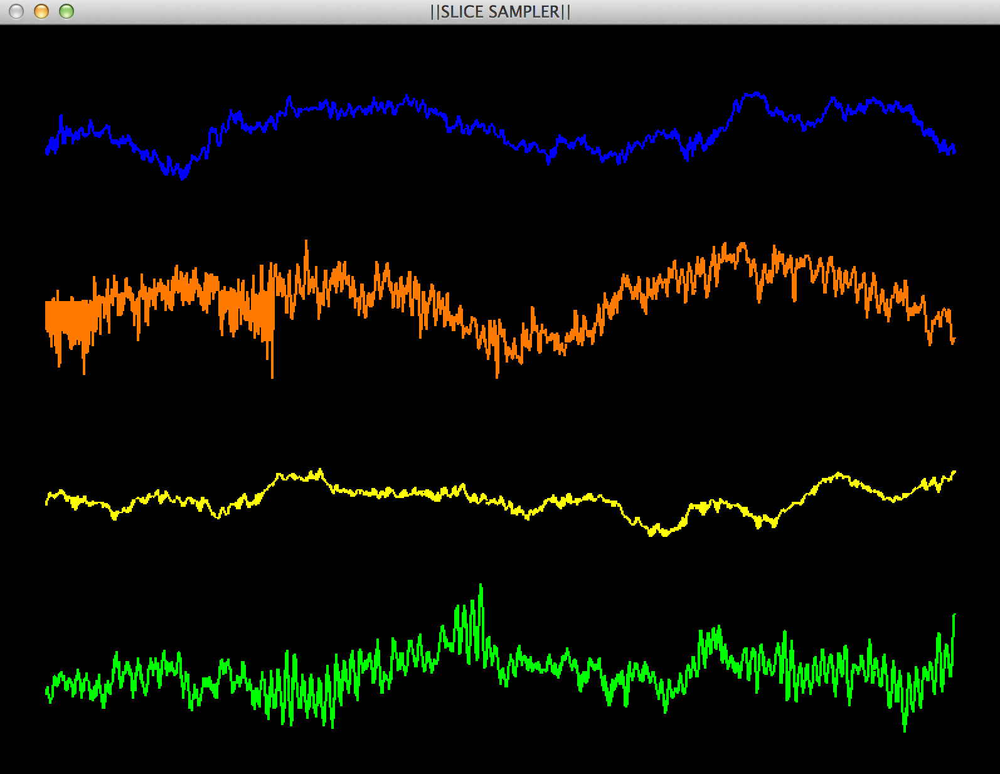

SLICE SAMPLER
Lucas Hanson & Carrie Sutherland
Final Project Documentation
Welcome to Slice Sampler! This program allows the user to load in a .wav file and play different segments and change different parameters for each of the waveform slices. This program is set up to take the audio file you load in to the program and slice it up into four sections. For each of these sections or "slices," the user can alter the loop length, where to begin the loop length, highpass and lowpass, the volume for each slice, and mute each slice
To Be Continued...
The folowing are items yet to be implemented:
Installation
To download select this link: slicesampler.tgz
- In this tgz file you should see a Makefile, the header file, the slicesampler file, and two tester .wav files
- After dowloading the files, move the folder into you home folder.
- You can execute this file by opening terminal and navigating to the folder using terminal commands.
- Once you have reached this folder type: make
- This should compile and write the program. Finally type ./slicesampler test.wav, ./slicesampler test2.wav or add a .wav file of your own!
- This should launch the program.
User Manual
Your Terminal should present you with the following keyboard commands to control SliceSampler./n
- 'SPACEBAR' - Start and stop audio
- 'a' - select slice A
'b' - select slice B
'c' - select slice C
'd' - select slice D - '[' - decrease loop length
']' - increase loop length - '-' - nudge start location left
'=' - nudge start location right - '_' - quick nudge start location left
'+' - quick nudge start location right - [e/r] decreases/increases lowpass cutoff freq
[u/i] decreases/increases highpass cutoff freq - 't' increases volume of a slice
'y' decreases volume of a slice - 'f' - toggle fullscreen
- 'm' - mute on/off for a specific slice
- 'q' - quit the program
- The arrow keys allow you to rotate the image in the function as well
Testing Issues
Lucas and I struggled with our Low-pass and High-pass implementation. We know that our execution for low-pass and high pass still needs work particularly with extending the buffer to include the overlap amount that occurs when you place effects on the signal. Another aspect that might be confusing for the user is that there is no way to know that changes are happening to the signal without hearing them.
Program Photos
Below is a photo of what the executed project looks like and a picture of the instructions that should appear within the Terminal:
